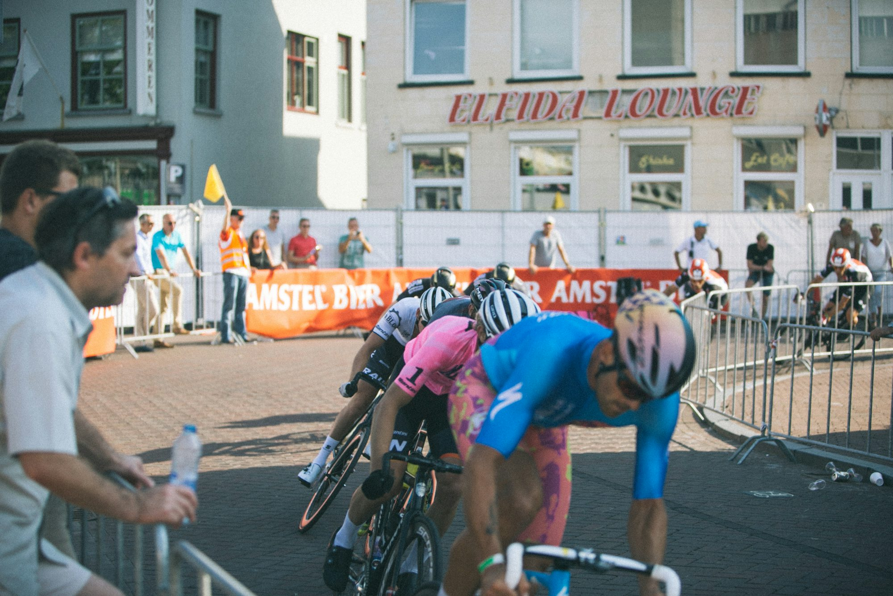

Flexibility and Stretching: Unlocking Your Body's Potential
This article explores the importance of flexibility and stretching, outlining the benefits, various techniques, and tips for incorporating stretching into your daily routine.
Understanding Flexibility
Flexibility refers to the ability of joints and muscles to move through their full range of motion. This characteristic is influenced by various factors, including genetics, age, activity level, and overall health. As we age, flexibility tends to decrease due to muscle stiffness and reduced activity levels, making it crucial to prioritize stretching and flexibility training throughout our lives.
Benefits of Stretching and Flexibility
1. Improved Range of Motion: Regular stretching enhances flexibility, allowing for a greater range of motion in joints. This increased mobility can improve performance in physical activities and everyday tasks, making movements smoother and more efficient.
2. Injury Prevention: Stretching helps prepare muscles and joints for physical activity, reducing the risk of injuries. By improving flexibility, individuals can enhance their ability to withstand the demands of various exercises and sports, minimizing the likelihood of strains, sprains, and other injuries.
3. Reduced Muscle Soreness: Engaging in stretching post-exercise can alleviate muscle soreness and stiffness. By promoting blood flow and circulation, stretching helps to flush out lactic acid buildup, leading to quicker recovery and less discomfort.
4. Enhanced Posture: Poor posture can lead to discomfort and chronic pain, particularly in the back and neck. Stretching the muscles that contribute to good posture can help realign the body and promote a healthier alignment, reducing the risk of discomfort and enhancing overall well-being.
5. Stress Relief: Stretching can also provide mental benefits. The act of stretching encourages relaxation and mindfulness, helping to relieve tension and stress accumulated throughout the day. Many people find that incorporating stretching into their routines serves as a calming ritual.
6. Improved Performance: For athletes and fitness enthusiasts, flexibility is crucial for optimal performance. Improved flexibility can enhance athletic abilities, allowing for more powerful and efficient movements in activities such as running, cycling, and team sports.
Types of Stretching Techniques
There are various types of stretching techniques, each serving different purposes. Understanding these methods can help you choose the best approach for your needs:
1. Static Stretching: This technique involves holding a stretch for a specific duration, typically 15 to 60 seconds. Static stretching is most effective when performed after physical activity to promote recovery and enhance flexibility. Common static stretches include hamstring stretches, quadriceps stretches, and shoulder stretches.
2. Dynamic Stretching: Unlike static stretching, dynamic stretching involves moving parts of the body through their range of motion in a controlled manner. This technique is often used as part of a warm-up routine to prepare muscles for activity. Examples include leg swings, arm circles, and walking lunges.
3. Ballistic Stretching: This technique uses momentum to stretch muscles and joints. While it can be effective, ballistic stretching is generally not recommended for beginners, as it may lead to injury if not performed correctly. Instead, it is more suitable for athletes who require greater flexibility for their specific sports.
4. PNF Stretching: Proprioceptive Neuromuscular Facilitation (PNF) is an advanced stretching technique that combines stretching and contracting of the targeted muscle group. This method is typically performed with a partner and can significantly improve flexibility. PNF stretching often involves a sequence of contracting the muscle, relaxing, and then stretching further.
5. Yoga and Pilates: Both yoga and Pilates incorporate stretching and flexibility training into their practices. These disciplines focus on breathing, core strength, and flexibility, promoting a holistic approach to physical fitness and well-being. Many people find that regular participation in yoga or Pilates improves their overall flexibility and mental focus.
Tips for Incorporating Stretching into Your Routine
1. Warm Up First: Before engaging in stretching exercises, it’s important to warm up your muscles. A few minutes of light aerobic activity, such as walking or jogging, can increase blood flow and prepare your body for stretching.
2. Stretch Regularly: Aim to incorporate stretching into your daily routine. Even just a few minutes of stretching can yield significant benefits over time. Consider setting aside specific times each day for flexibility exercises.
3. Focus on Major Muscle Groups: When stretching, pay attention to major muscle groups, including the neck, shoulders, back, hips, and legs. Ensure that you stretch both the front and back of your body to maintain balance and prevent tightness.
4. Breathe Deeply: As you stretch, focus on your breathing. Deep, controlled breaths can enhance relaxation and help you better connect with your body during each stretch.
5. Listen to Your Body: Stretching should never be painful. If you experience discomfort, ease off and modify the stretch. It’s important to respect your body’s limits and avoid pushing beyond what feels comfortable.
6. Incorporate Stretching into Workouts: Consider adding stretching to your workout routine. Performing dynamic stretches as part of your warm-up and static stretches during your cool-down can help optimize performance and recovery.
Conclusion
Flexibility and stretching are essential components of a well-rounded fitness regimen. By incorporating stretching exercises into your daily routine, you can improve your range of motion, reduce the risk of injuries, enhance posture, and experience greater overall well-being. Whether through yoga, dynamic stretching, or simply dedicating a few minutes each day to targeted stretches, the benefits of flexibility are within reach for everyone.
Prioritize flexibility in your fitness journey, and unlock your body’s full potential for movement, performance, and relaxation. Embrace the power of stretching and discover the transformative effects it can have on your life.